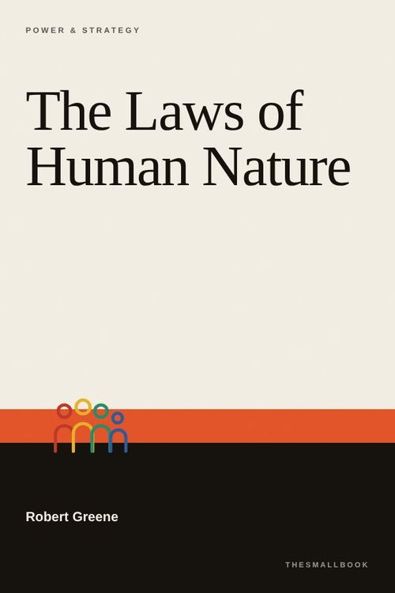

Why Did Julius Caesar Fail?
Warned by Everyone, Heard No One
📜 What Happened
A soothsayer warned him about the Ides of March. His wife Calpurnia dreamed of his murder and begged him to stay home. A note detailing the entire plot was pressed into his hand on the walk to the Senate - he didn't read it. He'd dismissed his bodyguard, declaring it better to die once than live in fear. Twenty-three stab wounds later, the men he'd pardoned and promoted had killed him - led by Brutus, whom he'd treated as a son.
☠️ The Fatal Mistake
He'd survived so much that warnings became noise. Invulnerability isn't a fact; it's a feeling - and it peaked exactly at maximum danger.
🧠 The Lesson (Free for You)
The warnings you're too important to read are usually the important ones. Every 'that could never happen to me' is data about your blind spot, not the risk.
The Antidote Book

After power, seduction, and war, Greene turns to the operating system underneath them all: human nature itself - the wiring evolution installed that runs us beneath awareness. The 18 laws map the forces: irrationality…
📖 OPEN THE FULL INTERACTIVE BREAKDOWN →Questions people ask about Julius Caesar
Why did Julius Caesar fail? He'd survived so much that warnings became noise. Invulnerability isn't a fact; it's a feeling - and it peaked exactly at maximum danger.
How much was lost? His life, the Republic's peace
What is the lesson? The warnings you're too important to read are usually the important ones. Every 'that could never happen to me' is data about your blind spot, not the risk.
Julius Caesar kyun fail hua? In simple English: He'd survived so much that warnings became noise. Invulnerability isn't a fact; it's a feeling - and it peaked exactly at maximum danger. The cost was His life, the Republic's peace.
Keep digging
More ego failures · Open the full Graveyard
Read the antidote book summary: The Laws of Human Nature
Related failures
- Why did Sita's Exile fail? ~5000 BCE (epic) · The Queen Who Was Sacrificed to Reputation
- Why did Sati's Sacrifice fail? ~5000 BCE (epic) · The Vow of Love That Became a Curse of Grief
- Why did Ravana fail? ~5000 BCE (epic) · The Scholar-King Whose Arrogance Cost Him an Empire
- Why did Dasharatha fail? ~5000 BCE (epic) · The King Destroyed by His Own Promise
- Why did Daksha's Yagna fail? ~5000 BCE (epic) · The Sacrifice That Ended in Destruction Because the Host Snubbed a Guest
- Why did Bhasmasur's Boon fail? ~5000 BCE (epic) · The Boon That Destroyed the Man Who Won It
Questions this case answers
Questions people ask about Julius Caesar
Why did Julius Caesar fail? He'd survived so much that warnings became noise. Invulnerability isn't a fact; it's a feeling - and it peaked exactly at maximum danger.
How much was lost? His life, the Republic's peace
What is the lesson? The warnings you're too important to read are usually the important ones. Every 'that could never happen to me' is data about your blind spot, not the risk.
Julius Caesar kyun fail hua? In simple English: He'd survived so much that warnings became noise. Invulnerability isn't a fact; it's a feeling - and it peaked exactly at maximum danger. The cost was His life, the Republic's peace.
Keep digging
More ego failures · Open the full Graveyard
Read the antidote book summary: The Laws of Human Nature
Related failures
- Why did Sita's Exile fail? ~5000 BCE (epic) · The Queen Who Was Sacrificed to Reputation
- Why did Sati's Sacrifice fail? ~5000 BCE (epic) · The Vow of Love That Became a Curse of Grief
- Why did Ravana fail? ~5000 BCE (epic) · The Scholar-King Whose Arrogance Cost Him an Empire
- Why did Dasharatha fail? ~5000 BCE (epic) · The King Destroyed by His Own Promise
- Why did Daksha's Yagna fail? ~5000 BCE (epic) · The Sacrifice That Ended in Destruction Because the Host Snubbed a Guest
- Why did Bhasmasur's Boon fail? ~5000 BCE (epic) · The Boon That Destroyed the Man Who Won It
Questions this case answers
Searchable, filterable, simple to read - they paid billions; you get the lesson.